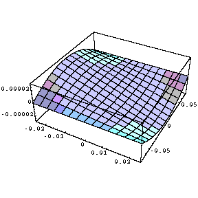
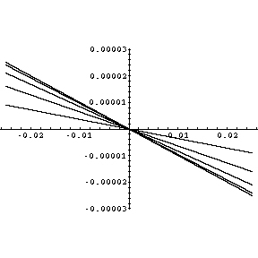
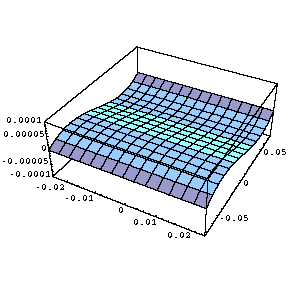

x varies from -0.025 to 0.025 m (closest to you), z varies from -0.075 to 0.075 (away from you)
|  |  |
| rphi res | rphi res vs x for several positive Z's |
|  | |
| z res | z res vs z |
Ack! These are smile plots with all x and z's reversed! The bowing is actually in the "fingernail" direction!!!